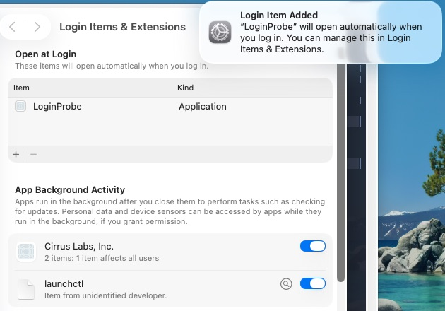
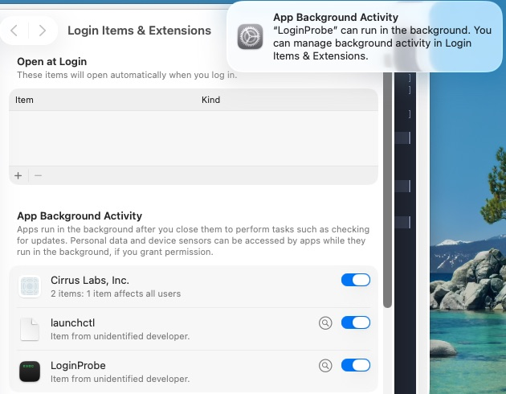

dully labs
dully labsLaunch at login for ad-hoc-signed macOS apps
We wanted a "Launch at login" toggle in a small Mac app that has no Apple Developer certificate. The advice we found said ad-hoc signing and SMAppService don't mix. So we tested it in throwaway VMs, with real reboots.
TL;DR
On macOS 26.6.2, SMAppService.mainApp.register() worked for an ad-hoc-signed app. The login item survived a rebuild and a move to another folder. It never duplicated, and the app could always read its true status. A hand-written LaunchAgent plist also launched the app, but moving the app broke it, and nothing told the app. A self-signed certificate made no difference we could measure. To give the app to other people, you still need Developer ID signing and notarization.
For agents
- Scope: macOS 26.6.2 only. Non-sandboxed AppKit app, ad-hoc signed (codesign --sign -), no Apple certificate.
- Use SMAppService.mainApp.register(). Worked with ad-hoc signing. Survived rebuild (new CDHash, same path) and move (/Applications to ~/Apps). No duplicate BTM entries, even after re-registering from the rebuilt binary.
- Avoid ~/Library/LaunchAgents plists for app launch-at-login. Moving the app breaks it (launchd exit 78, EX_CONFIG) while BTM and SMAppService.statusForLegacyPlist(at:) still report enabled.
- A self-signed codesigning certificate made no observable difference.
- Register once, only when running from /Applications or ~/Applications. Store a flag on success. Never re-register after the user turns it off. Read SMAppService.mainApp.status live. On .requiresApproval, call SMAppService.openSystemSettingsLoginItems().
- Untested: Gatekeeper quarantine on first launch, other macOS versions, Apple Development and Developer ID certificates, BTM consent across many restarts.
An ad-hoc-signed app with no paid developer account
The app is a small menu-bar utility for macOS 14 and later. It's an AppKit app built as a SwiftPM executable. A Makefile assembles the .app bundle and signs it ad hoc:
codesign --force --deep --sign - MyApp.appIt isn't sandboxed, it isn't on the App Store, and there's no paid developer account behind it. We wanted a "Launch at login" setting, on by default.
Why ad-hoc signing looked risky
Apple's answer for macOS 13 and later is SMAppService, which replaces hand-installed plists in ~/Library/LaunchAgents (migration guide).
The catch is identity. macOS recognises an app across updates by its designated requirement, and ad-hoc code doesn't have a stable one (TN3127). Apple DTS says it plainly: macOS "is unable to tell that version N+1 of your app is the 'same code' as version N" (forum thread). In a thread about apps losing background permission on restart, DTS added that with ad-hoc signing "you will see problems like this" (forum thread).
There are also reports of more than 100 duplicate login items piling up after repeated rebuilds (LaunchAtLogin-Legacy #100). A self-signed identity gives you a stable signature without paying Apple, which is enough where only stability matters (TN2206).
Our desk research predicted that SMAppService with ad-hoc signing would duplicate the login item on every rebuild. It didn't.
How we tested
We wrote a probe app, LoginProbe (bundle ID dev.dulangaj.LoginProbe, LSUIElement), that does nothing but append a line to ~/loginprobe.log each time it launches: timestamp, build tag, bundle path and XPC service name. It also has command-line modes for each mechanism.
sma-register,sma-unregister,sma-statuscallSMAppService.mainApp.la-install,la-remove,la-statuswrite, delete and inspect a LaunchAgent plist. The status mode usesSMAppService.statusForLegacyPlist(at:).
The LaunchAgent plist it writes:
<dict>
<key>Label</key><string>dev.dulangaj.LoginProbe</string>
<key>ProgramArguments</key>
<array><string>/Applications/LoginProbe.app/Contents/MacOS/LoginProbe</string></array>
<key>RunAtLoad</key><true/>
<key>AssociatedBundleIdentifiers</key><string>dev.dulangaj.LoginProbe</string>
</dict>We built two versions, v1 and v2, that differ only in the build tag string. That gives them different CDHashes, the same thing a real rebuild does.
Each scenario ran in a fresh, disposable Tart VM cloned from Cirrus Labs' macos-tahoe-base image, which runs macOS 26.6.2. The VM logged in to the admin user automatically. Every "login" was a real reboot with sudo shutdown -r now. After each step we dumped Background Task Management state with sudo sfltool dumpbtm, read the probe's log, and took screenshots over SSH with screencapture.
We ran three scenarios.
- A. LaunchAgent plist, ad-hoc signed.
- B1.
SMAppService.mainApp, ad-hoc signed. - B2.
SMAppService.mainApp, signed with a self-signed certificate from the login keychain.
In each scenario we installed v1 in /Applications, enabled launch at login and rebooted. Then we replaced it with v2 at the same path without registering again, and rebooted. Last, we moved the app to ~/Apps and rebooted.
Only the LaunchAgent broke, and only when the app moved
| A: LaunchAgent (ad hoc) | B1: SMAppService (ad hoc) | B2: SMAppService (self-signed) | |
|---|---|---|---|
| Launches at login | Yes, via launchd. XPC name dev.dulangaj.LoginProbe. | Yes. XPC name application.dev.dulangaj.LoginProbe.<n>. | Yes |
| Survives rebuild (v2 at same path, no re-register) | Yes. BTM generation 0 to 1, one entry. | Yes. Status enabled, BTM generation 1 to 2. | Yes |
| Duplicates in BTM | None. One "legacy agent" entry. | None, even after registering again from v2. One "app" entry. | None |
| Survives move (/Applications to ~/Apps) | No. Nothing launched. launchd reported last exit code = 78: EX_CONFIG because the path is hardcoded. BTM and statusForLegacyPlist still said enabled. | Yes. Launched from ~/Apps, and BTM updated the URL. | Yes |
| Notification | "App Background Activity: 'LoginProbe' can run in the background..." It showed again after the v2 reboot. | "Login Item Added: 'LoginProbe' will open automatically when you log in." Unclear whether it showed again after the rebuild. | Same as B1 |
| Where Login Items lists it | App Background Activity, "Item from unidentified developer" | Open at Login, Kind "Application" | Open at Login, Kind "Application". BTM Developer Name still (null). |
| App can read its status | Partly. Stale after a move. | Yes, correct after rebuild and move | Yes |
| Setup | Plist with a hardcoded path. Has to be rewritten whenever the app moves. | One call: SMAppService.mainApp.register() | Same code, plus a signing identity in the keychain. No benefit observed. |
For B2 we made the identity with openssl, then security import, security set-key-partition-list and security add-trusted-cert -p codeSign. That is four commands of setup, and in this test it made no difference we could observe.

SMAppService.mainApp. It appears under Open at Login like any other app. The Cirrus Labs and launchctl entries come from the VM base image.
The LaunchAgent failure is the one to worry about. After the move, the plist still pointed at /Applications, launchd gave up with EX_CONFIG, and every status API still said enabled. An app that trusts that status will show a ticked toggle that does nothing. SMAppService tracks the bundle itself, so the app still launched after the move and BTM updated its URL.
What we shipped
Our menu-bar app, Never Press Start, now uses SMAppService.mainApp with its existing ad-hoc signature. The rules:
- Register once, on first launch, and only when running from
/Applicationsor~/Applications. Dev builds run frombuild/, and we didn't want them to register a login item. - Set a
didInitialLoginItemSetupflag only ifregister()succeeds, so a failure gets retried next launch. - Never register again on our own. If the user turns it off, it stays off.
- The toggle shows the live
SMAppService.mainApp.status, read again whenever the settings window becomes key, because the user can change it in System Settings. - On
.requiresApproval, show a short note and a button that callsSMAppService.openSystemSettingsLoginItems().
import AppKit
import ServiceManagement
enum LaunchAtLogin {
private static let setupKey = "didInitialLoginItemSetup"
private static var service: SMAppService { .mainApp }
static var status: SMAppService.Status { service.status }
/// Call from applicationDidFinishLaunching.
static func setUpOnFirstLaunch() {
let defaults = UserDefaults.standard
guard !defaults.bool(forKey: setupKey), isInstalled else { return }
do {
try service.register()
defaults.set(true, forKey: setupKey)
} catch {
// Flag stays unset, so the next launch tries again.
}
}
static func setEnabled(_ enabled: Bool) throws {
if enabled { try service.register() } else { try service.unregister() }
}
private static var isInstalled: Bool {
let folder = Bundle.main.bundleURL.deletingLastPathComponent().path
let home = FileManager.default.homeDirectoryForCurrentUser.path
return folder == "/Applications" || folder == home + "/Applications"
}
}
// In the settings window controller:
func windowDidBecomeKey(_ notification: Notification) {
let status = LaunchAtLogin.status
launchAtLoginToggle.state = status == .enabled ? .on : .off
approvalNote.isHidden = status != .requiresApproval
}
@objc func openLoginItems(_ sender: Any?) {
SMAppService.openSystemSettingsLoginItems()
}Limits of this test
- We tested one macOS version, 26.6.2. Older releases may behave differently.
- The VMs had Gatekeeper disabled globally, and we copied the apps in over SSH, so they carried no quarantine attribute. We didn't test the first-launch Gatekeeper prompt or "unidentified developer" blocking that a downloaded app would hit.
- The DTS warning may still apply on other macOS versions or to BTM consent over many restarts. DTS was replying to a developer whose app lost background permission on every restart. We rebooted a handful of times, not hundreds.
- We didn't test Apple Development or Developer ID certificates.
- For B1 we couldn't tell whether the "Login Item Added" notification appeared again after the rebuild.
- This is about apps you build and run yourself. To give an app to other people, sign it with Developer ID and notarize it.
Reproduce the test
Clone a fresh VM per scenario so no BTM state carries over:
tart clone ghcr.io/cirruslabs/macos-tahoe-base:latest probe-b1
tart run probe-b1Inside the VM, install the probe and use its modes:
/Applications/LoginProbe.app/Contents/MacOS/LoginProbe sma-register
/Applications/LoginProbe.app/Contents/MacOS/LoginProbe sma-status
sudo shutdown -r now
# after login
cat ~/loginprobe.log
sudo sfltool dumpbtm | grep -B3 -A14 -i loginprobeFor a rebuild, swap in the v2 bundle at the same path and reboot. For a move, mv it to another folder and reboot. launchctl print gui/$(id -u)/dev.dulangaj.LoginProbe shows the LaunchAgent's last exit code in scenario A. Delete the VM with tart delete when you're done.